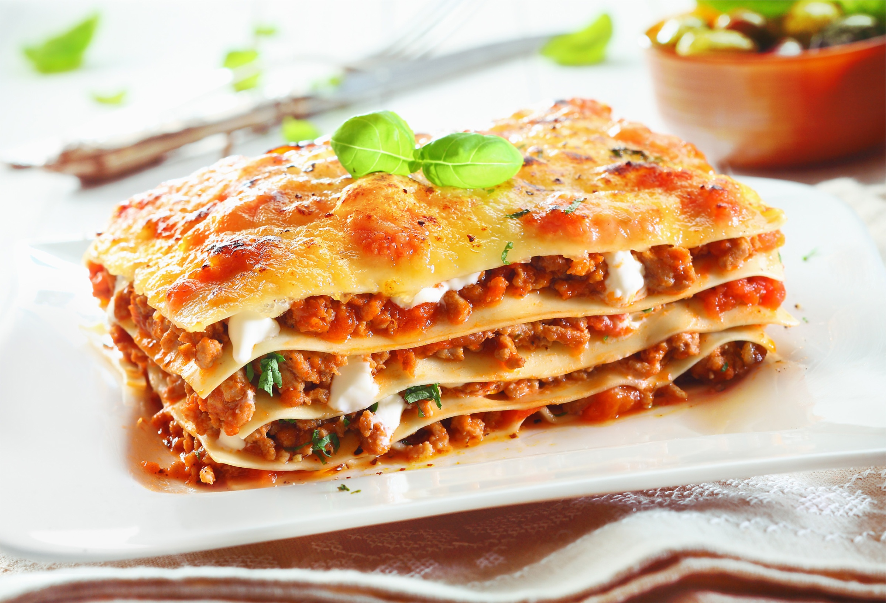

Chicken & Pesto Pasta

Description
Grab some Italian pesto and greens from your storecupboard and rustle up
this creamy chicken and green bean pesto pasta – penne or fusilli work
well.
Ingredients
- 400g pasta shapes
- 250g green beans, trimmed
- 1 tbsp olive oil
- 1 bunch spring onions, finely sliced
- 2 large roast chicken breasts, shredded
- 5 tbsp pesto
- 3 tbsp double cream
- Parmesan, grated, to serve (amount not specified)
Steps
-
Cook pasta following pack instructions, adding green beans for the final
6 mins of cooking time. Drain and reserve a few tbsps of the cooking
water.
-
Heat olive oil in a large frying pan. Add spring onions and cook for 1-2
mins until soft, then set aside.
-
Add the shredded chicken to the pan and heat through. Stir through pesto
and cream. Add pasta and beans to the chicken mix and stir to coat,
adding a little of the cooking water. Season and sprinkle with Parmesan.